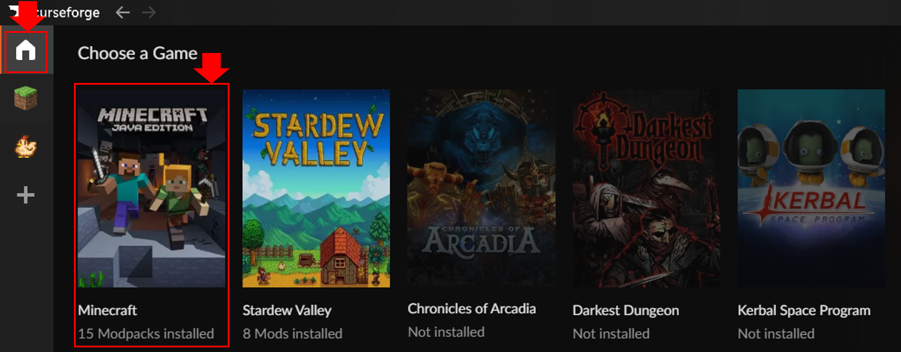

토정 마인크래프트 시청자 참가 가이드
1. 커스포지 다운로드
- 커스포지 공식 사이트에 접속
- 중앙 Download on Overwolf 클릭
- 설치 파일 실행 후 설치 완료
- 설치 후 CurseForge 실행 → Minecraft 클릭

커스포지 다운로드 예시
2. 토정 모드 파일 다운로드
- 디스코드 #시참 채널에서 토정님이 공유한 zip 모드 파일 다운로드

디스코드에서 모드 파일 다운로드 위치
3. 모드 추가하기
- CurseForge에서 Import 클릭 → Choose .zip file을 눌러 다운로드한 zip 파일 추가


CurseForge에서 모드 zip 파일 불러오기
4. 실행
- 모드가 추가된 프로파일을 선택 후 Play 버튼 클릭하여 게임 실행
- 서버 주소 : 마크.토정.서버.한국:25565
Play 버튼을 눌러 마인크래프트 실행